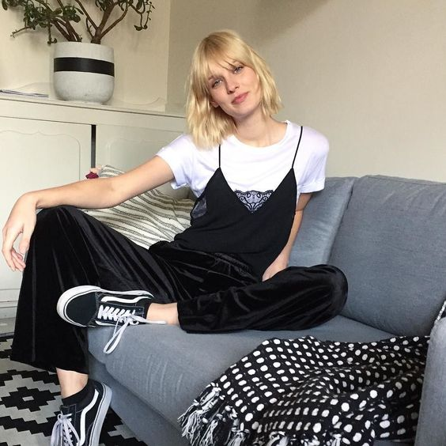
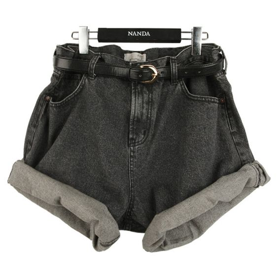
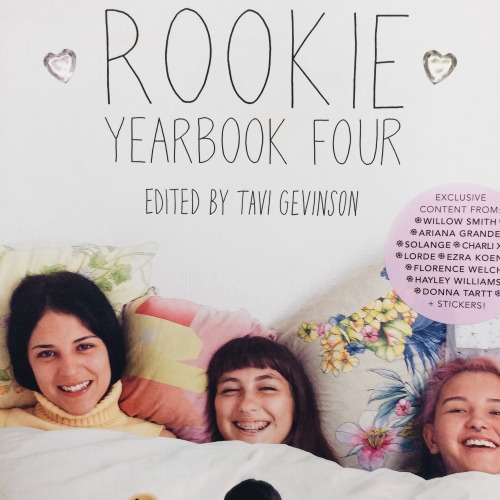

my favorite type of cereal is captain crunch but my family barely buys it because it's too sweet and is very unhealthy also I really don't like eating my cereal with milk because I don't like milk very much because of the texture and the taste ugh I don't like milk at all.

title:these are my favorite websites

title:vans
vans are a good everyday shoe because what's amazing about vans is that even after they get dirty they still look good. My favorite versions of the vans are the sk8 hi, low top sk8, the checkerboards and the checkerboard coasts. I like the colors white and black, blue, and light purple.

title:cacti
my favorite type of cati are the ruby ball I like them in yellow or the redish-pink color they look really cool. I saw them at this plant market in boston. I don't have one yet but I'm getting one this summer to put in my room.


title:fjallraven kanken
i really want a fjallraven kanken those super nice backpacks. You can get them in a bunch of different colors and the colors are all super cute even the sand color looks good everyone says their so amazing and water proof and everything how their so beautiful. I want to get one in air blue or a lilac color I saw a couple of them at urban Outfitters and on this website called eastdane. I hope I get one soon because they are amazing.


title:my favorite songs for the summer//2017:
-flowers by raye
blessings by lecrae and ty dolla sign
-wild by Troye Sivan and Alessia Cara
-youth by Troye Sivan
-the kids don't wanna come home by Declan McKenna
-coaster by Khalid
-feel good by Dyalla
-red velvet by Dyalla
-beachside by Dyalla
-still there by Dyalla
-gone by Dyalla
-i'll be bad by Dyalla
-little bit more by Dyalla
-lovely girl by Dyalla
-fight for you by Dyalla
-only by Dyalla
-wait a minute! by Willow Smith
-the kids don't wanna come home by Declan Mckenna
-let my baby stay by Amandla Stenberg
title:helpful ch.1
for the first chapter of the helpful series which is basically talking about topics that are important and of course helpful. For the first one I wanted to talk about being confident in the clothes you decide to wear. I happen to really like the 90's and hipster look and some of the clothes I wear you would'nt see any one else wear such as a grandma style wind breaker or high waisted mom jeans or 90's styled top you probably won't see anyone wearing those clothes today. So when I see something I like I usually say oh would I really wear this or no one else is wearing this but I usually end up buying it anyway with the mind set that I'm the one that's wearing the clothing item, this is my style, I really like how it looks, and this style is a part of my personality.
title:helpful:ch.2
in this chapter I wanted to about talk the very impotrant topic of body confidence. Many people are constantly shaming those larg sized or extra large sized wearers and those people with zits and other flaws that are normaland should be accepted by everyone. Though I will happily say the model industry is progressing by putting plus sized women in ads smiling becuase they feel good about themselves. Many websites are having different sized women and race put on their website for modelling clothes. The women getting interviewed talk about their struggles and they talk about how much they've grown and how their way more confident in their skin and love themselves and these messages can encourage others around the world to appreciate their one and only body they have instead shaming it.
title:helpful ch.3
a lot of people always say this but it's very important to always be your self because you'll be happy abou your self it can be scary but once you finally become your true self you'll enjoy life more. Even when you guys have noting in common or what they are talk about is extrememly boring or out of interest to you but you think their the right people or the ones you have to be freinds with to fit in but if you're not happy with them then it's time for you to find some better freinds that you feel comfortable being your true self around and you vibe off of each other.
title:helpful ch.4
in ch.4 I wanted to talk self love. What does this mean well I think self love means lovign yourself for who you are and not wishing you were someone else or looked a different way. When you think confidently about your slef this can show up in the way you talk, show yourself, and help others. If you love yourself then you can help others love themselves just as much as you do and that can be a hlepful thing to do. If you're constantly saying compliments to your self or making your self productive throught the day then it will have it's benefits in your everyday life style because you have self love.
title:helpful ch.5
to continue this series of helpful I wanted to talk about creating a safe space for you. This is a place where you can find calmness and distract your self just for a little while from the outside crazy loud world. You can come here anytime it's your space or a space that's not yours just a quiet space it could be your room, a corner, a closet, the attic, a coffee shop you found, the library, a diner, anywhere but it's safe, it's quiet. You can do anythin you want in this space you can write, read, draw, excersize, eat, do absolutely nothing just sit and think,ect. I like creating I would build this safe space it would be an attic , white walls, a big white rug covering the whole floor, it would have my art others art cds and posters hanging on the wall, a record player . I would draw, paint , think, and write there. Or my safe space would be a coffee shop. This safe space is important because it allows to think and calm down before facing the loud, big, crazy, but exciting world again.
title:books i really want to read
note to self by connor franta I really want to read this book because it seems really inspirational and it has a lot of really important topics and topics im passionate about. It talks about connor's child hood and how he has grown a lot and a bunch of other great treasures in it I keep reading the sample on the Barnes and Noble site.

the other book I really want to read is milk and honey by rupi kaur. I want to read this book because it seems very powerful and it feels like rupi's thoughts were just poured onto the page and she did'nt stop writting until it was all out. Again I also keep reading the book sample on the Barnes and Noble site and it sounds really really good and I love the book cover I will probably end up trying to draw the cover of the book sometime.yep those are the books I really want to read right now.

title:my favorite girl groups
first is the girl group Salt-N-Peppa they played a big role in the hip hop industry of women. They were from Queens,New York and I have always loved their style and music they created together.

then my other favorite girl group is Spice Girls. I still have to watch their movie "Spice World" but their music is great and it really gives off the late 90's and early 2000's vibe my favorite spice girls are Mel C and Mel B and my favorite song by them is "say you'll be there". I am also kind of inspired by their style especially Mel C's style.
title:i love mexican food a whole lot
my favorite places to eat mexican food are district taco, chipotle, san antonio grill, and this spot in georgetown I can't pronounce the name but their food is so so so good. I like tacos,enchiladas, quesadillas,and burritos.
title:thrift stores
well clothes,shoes,room decor,and books are getting more and more pricey so where can you find cheap stuff if you're a broke teen like me. It's called the thrift store they have everything from tops to decor to shoes and it's super cheap. Also you can create and experiment with your style. Here are some tips for thrifting. Tip #1 is make sure you look through everything because you might over look a section and it might have exactly what you're looking for. Tip #2 is have an open mind, for me I usaully go in with a general idea lets say I want to look for a jacket it may end up being a sweat shirt or a wind breaker you don't want to have a specific idea because you may not find it. Tip #3 is find out when the store you thrift at has sales going on this can help you save even more money different thrift stores have different sales some have sales like 50% off on certaint colored tags or stuff a bag for $5 so find out what sales your local thrift store has. Tip #4 is make friends with the workers and other frequent shoppers this can make the whole shopping experience even more enjoyable.

title:mom jeans
the fashion trend of mom jeans began in the 1980's through the early 90's. Not only were mom wearing the jeans but it became a huge trend so of course everyone started wearing them. Mom jeans are made to sit on your nautral waist, and you can move around a lot in them. Today you can find many pairs of mom jeans in thrift stores. I really like how mom jeans look and they go with a lot of outfits. SNL made their famous jcpenney mom jeans ad with starring Tina Fey, Amy Poehler, Maya Rudolph, and Rachel Dratch. This ad is probably my favorite ad i've ever seen because it has a late 90's very early 2000's vibes to it.

title:my favorite youtubers
Anna Beatrice
Chelsea DIY
Rubyy Lyn
trevi
inayah
Brianna
i-D
title:my favorite makeup looks
some of these makeup looks I have tried and others I have not tried yet but here are a list of my favorite makeup looks.
peach: this is a really nice simple, bright but settled look I really like.

glossy eyelids: I really like this makeup look because it is also simple but it makes your eyes pop especially when in the sun.

sunset shadow: this look brings out eye colors such as green, brown, or blue.
natural: this makeup look allows you to show your real features with out putting on pounds and pounds of makeup.

glossy lips: I like this look because it's really easy to do and it looks fresh.

star lips: this look is really unique and I would wear this because it's a natural and fun look.

title:my clothing go to's
These are the clothes I tend to reach for the most throught the week.
first are my adidas pants their black and white which goes with a lot of tops their really comfortable and I can still wear them in the summer because their not too warm.
my low top nike air force one's these are all white which goes with everything and they look I really nice guess where I got them from? the thrift store.
adidas superstars these are definitly my go to I wear them almost everyday.
jean jacket these go with a lot of outfits and they look really nice.
title:collage
one of my favorite things to do to past the time or to fill up my art journal is to collage. I print pictures from rookiemag.com because they have collage kits on their website which you can print, cut, and paste. I like to cover the whole page with pictures and small doodles and other colored pages which can make the whole page pop. Collaging is a form of art which can be used in the magazine industry to come up with ideas. So if you're ever bored then just print or draw some pictures and cut and paste them.
title:how to find your own personal style
finding your own style can be diffucult I myself am having a hard time figuring out my clothing style right now I think it's 90's and street wear. I basically just wear what ever I like and make it work :) but I do have some hand dandy tips that I have learned from other experts.
the first tip I will give you is start with an idea. This can include wanting to change your style.
next tip is a huge one for me but that is look for inspiration surrounding that style. For me I look for teens with that similar style I'll see something that their wearing from their ig post or I get inspiration from a pinterest page also youtube has a lot of fashion channels and lookbooks. Inspiration can come from other places such as films, magazines, on the street, and friends there are so many sources for inspiration. I don't tend to look at specific people for inspiration I find it anywhere.
look for shops that provide clothes for your style. On sociel media a lot of people will tag where they got their clothes from . You also want to do a little exploring of shops so you can get a feel of what stores sell. Some of my personal favorite places to shop are urban outfitters, h and m, and thrift shops.
lastly if you like it well wear it you can wear clothes from other styles and incorporate it into your own style.
title:my favorite cars
even though I can't drive I still have some cars that I think are nice.
beetle
cadillac
mini cooper
fiat
vw van
title:creme
to switch it up a little I wanted to post some pictures that are in the color theme creme. enjoy.
title:my favorite colors
white because it's a fresh color and it looks simple.
yellow because it's bright and it reminds me of lemonde which is my favorite drink.

air blue because i think it looks good on everything.
creme because it's a more natural color and it looks really good in pictures.
title:clothes I like
some of these clothes I have some I don't but these are the clothes and styles that I like none of these pictures are mine.
wide leg pj style pants
wide leg carpenter pants
lace tops
designer brand sweatshirts

soft fuzzy big jackets
romper
90's mom jeans

army pattern pants

windbreaker
mom jean shorts
hoop earings to dress an outfit up
the popular backpack I talked about
90's glasses
one of my favorite styles the tube top
track pants that look great with tube tops
title:short films you should watch on vimeo
sorry I can't give you links or show the video to the films my computer won't let me but hope you can search them up on vimeo.
-lollipop by eva michon this film is so so pretty to watch the their whistles are amazing the beat they make wow you have to check this one out.
-Agostina Galvez captures three olympic gymnast hopeful in action this film is so great because it's high fashion and it captures their flexible bodies moving the ball and the string thing (don't know what it's called).
-whatever/ruby haunt by cloe bailly.
title:good magazine books
magazine books are books that have pictures and fashion and topics that would typically be in a regualr magazine like teen vogue or seventeen but these magazine books have no ads which is why I prefer to read these instead. Here are a few of my favorite magazine books.
rookie mag produced by the creator and fashion blogger Tavi Gevinson who started blogging at a really young age it was orinally called style rookie but it was changed to rookie mag when the magazine was produced but you can check out rookiemagazine.com theres a link where I talk abou tmy favorite websites. The website is divided into monthly "issues" it's updated 5 days a week 3 times a day the online magazine and hard copy magazine was created for teen girls who love fashion so I was super happy when found out about rookie just what I had been looking for. The topics range frompop culture, fashion to adolescent social issues. There are 4 year books of rookie the first one talks about being happy, being sad, stree harrassment, and many other topics.
rookie year book 2 talks about doubt, rejection, back hand compliment, art, and much more
img src="year2.jpg" style="width:200px;height:200px;">rookie year book 3 talks about girl-on-girl crime, open relationships, standing for something and more topics.
year book 4 talks about friendships, speaking out, taking action, and learning abotu yourself.
the next magazine book I like is messy heads they talk about not being perfect but more on the beauty on the inside and having an interesting mind they focus on inspiration, adventure, and truly living your authentitc life. You can cut out pictures from this magazine because the pictures are beautiful.It has photo essays, short storeies, articles, journal prompts, music play list , poems, and some interactive pages so you can write your own messy thoughts and sip coffee. The also have a website where they talk about adventures, how to's, favorites, style, messy thoughts, muses and they sell the messy head books here as well. They have 3 books so far the first issue is called me,my mess and i it talks about discovering yourself, expressing yourself, and loving yourself.
messy head 2 is called rebel, rebel which has submissions from lots of men and women who share their experiences with finding their truest path and they talk about veganism, highschool, getting lost, and pushing their boundaries.
messy head copie 3 has three themed parts "when i'm there", "when i'm with you", "when i am".

the last magazine book i like is frankie it's based in australia